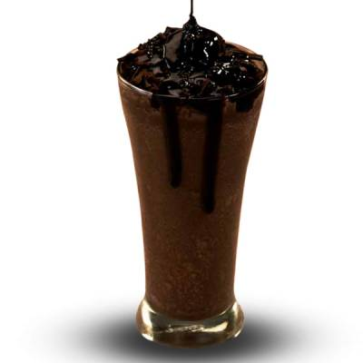

<section class="card-container" >
  <!-- <div class="card">
    <div class="card-img">
      
    </div>
    <div class="desc">
      <h6 class="primary-text">Olivia Smith</h6>
      <h6 class="secondary-text">Full Stack Developer</h6>
    </div>
    <button class="primary-text">View Profile</button>
    <div class="details">
      <div class="rating">
        <h6 class="primary-text"> 86% </h6>
        <h6 class="secondary-text"> Rating </h6>
      </div>
      <div class="activity">
        <h6 class="primary-text"> 92% </h6>
        <h6 class="secondary-text"> Activity </h6>
      </div>
    </div>
  </div> -->

  <div class="card">
    <div class="card-img">
      
    </div>
    <div class="desc">
      <h6 class="primary-text">KUKA WITH THUNDER</h6>
      <h6 class="secondary-text" style="padding: 1rem;">Kuka with a scoop of delicious ice-cream on top!</h6>
    </div>
    <button class="primary-text">₹50</button>
    <!-- <div class="details">
      <div class="rating">
        <h6 class="primary-text"> 86% </h6>
        <h6 class="secondary-text"> Rating </h6>
      </div>
      <div class="activity">
        <h6 class="primary-text"> 92% </h6>
        <h6 class="secondary-text"> Activity </h6>
      </div>
    </div> -->
  </div>
</section>


<!-- <mat-sidenav-container class="example-container">
  <mat-sidenav mode="side" opened>
    <mat-nav-list>
      <ng-container *ngFor="let item of menuList; let last = last">
        <mat-list-item (click)="handleClick(item)">
          <a matLine>{{item.linkTitle}}</a>
          <mat-icon matListIcon>keyboard_arrow_right</mat-icon>
        </mat-list-item>
        <mat-divider *ngIf="!last"></mat-divider>
      </ng-container>
    </mat-nav-list>
  </mat-sidenav>

  <mat-sidenav-content>
    <app-showcase [imgUrlChild]="imgUrlParent"></app-showcase>
  </mat-sidenav-content>
</mat-sidenav-container> -->


<!-- <a [routerLink]="item.link" routerLinkActive="active" matLine>{{item.linkTitle}}</a> -->


<!-- <div>

  <section>
    <ol>
      <li>home</li>
      <li>about</li>
      <li>contact</li>
    </ol>
  </section>
  
  <div class="app-showcase" [imgUrlChild]="imgUrlParent" app-showcase></div>
  
</div> -->
<!-- <div class="app-showcase" [imgUrlChild]="imgUrlParent" app-showcase></div> -->
<!-- <app-showcase [imgUrlChild]="imgUrlParent"></app-showcase> -->


<!-- <mat-card class="example-card" id="card">
    <mat-card-header>
      <div mat-card-avatar class="example-header-image"></div>
      <mat-card-title>Shiba Inu</mat-card-title>
      <mat-card-subtitle>Dog Breed</mat-card-subtitle>
    </mat-card-header>
    
    <mat-card-content>
      <p>
        The Shiba Inu is the smallest of the six original and distinct spitz breeds of dog from Japan.
        A small, agile dog that copes very well with mountainous terrain, the Shiba Inu was originally
        bred for hunting.
      </p>
    </mat-card-content>
    <mat-card-actions>
      <button mat-button>LIKE</button>
      <button mat-button>SHARE</button>
    </mat-card-actions>
  </mat-card>
   -->
